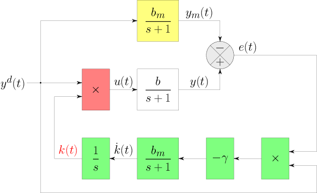

|
|
|
Ahmed MAIDI
Professeur

|
|
|
 
Département Automatique
Faculté de Génie Electrique et d'Informatique
Université Mouloud MAMMERI (UMMTO)
15 000 Tizi-Ouzou, Algérie (Algeria)
|
Commande Avancée (Master 2 Académique, Options : Automatique et Systèmes; Automatique et Informatique Industrielle)

Pré-requis
- Automatique de base.
- Modélisation des systèmes dynamiques.
- Commande numérique.
- Systèmes non linéaires.
- Commande optimale.
- Optimisation continue.
Programme
- Option : Automatique et Systèmes
- Partie 1 : Commande adaptative.
- Chapitre 1 : Généralités sur les systèmes incertains.
- Chapitre 2 : Principe de la commande adaptative.
- Chapitre 3 : Commande adaptative indirecte.
- Chapitre 4 : Commande adaptative directe.
- Chapitre 5 : Commande adaptative à modèle de référence.
- Partie 2 : Commande prédictive.
- Chapitre 1 : Optimisation des systèmes de commande.
- Chapitre 2 : Principe de la commande adaptative.
- Chapitre 3 : Commande matricielle dynamique (Dynamic Matrix Control; DMC).
- Chapitre 4 : Commande prédective généralisée (Generalized Predictive Control; GPC).
- Option : Automatique et Informatique Industrielle
- Partie 1 : Commande adaptative.
- Chapitre 1 : Généralités sur les systèmes incertains.
- Chapitre 2 : Principe de la commande adaptative.
- Chapitre 3 : Commande adaptative indirecte.
- Chapitre 4 : Commande adaptative directe.
- Chapitre 5 : Commande adaptative à modèle de référence.
- Partie 2 : Commande prédictive.
- Chapitre 1 : Optimisation des systèmes de commande.
- Chapitre 2 : Principe de la commande adaptative.
- Chapitre 3 : Commande matricielle dynamique (Dynamic Matrix Control; DMC).
- Chapitre 4 : Commande prédective généralisée (Generalized Predictive Control; GPC).
- Partie 3 : Commande optimale.
- Chapitre 1 : Formulation d'un problème de commande optimale (optimisation dynamique).
- Chapitre 2 : Calcul des variations.
- Chapitre 3 : Principe du minimum.
- Chapitre 4 : Commande linéaire quadratique (LQ).
- Chapitre 5 : Programmation dynamique.
Travaux pratiques
- Option : Automatique et Systèmes
- TP 1 : Etude de l'influence des variations paramétriques sur les perfromances en boucle fermée.
- TP 2 : Commande adaptative indirecte (Correction PID numérique + Méthode des moindres carrés récursifs).
- TP 3 : Commande adaptative directe (Lyapunov + règle MIT).
- TP 4 : Commande adaptative à modèle de réference.
- TP 5 : Commande matricielle dynamique (DMC)
- TP 6 : Commande prédictive généralisée (GPC).
- Option : Automatique et Informatique Industrielle
- TP 1 : Etude de l'influence des variations paramétriques sur les perfromances en boucle fermée.
- TP 2 : Commande adaptative indirecte (Correction PID numérique + Méthode des moindres carrés récursifs).
- TP 3 : Commande adaptative directe (Lyapunov + règle MIT).
- TP 4 : Commande adaptative à modèle de réference.
- TP 5 : Commande matricielle dynamique (DMC)
- TP 6 : Commande prédictive généralisée (GPC).
- TP 7 : Résolution (analytique et numériques) des conditions d'optimalité (équations d'Euler-Lagrange, d'Hamilton-Pontryaguine et de Ricatti).
- TP 8 : Simulation et implémentation pratique d'une commande optimale (cas d'un circuit électrique).
 Télécharger les textes des travaux pratiques.
Télécharger les textes des travaux pratiques.
Travaux dirigés
Télécharger la série d'exercices.
Examens et solutions
Télécharger les examens et solutions.
Documentation
Liste des ouvrages disponibles au niveau de la bibliothèque de
la Faculté de Génie Electrique et d'Informatique (Université Mouloud
MAMMERI de Tizi-Ouzou) :
- K. Najim. Commande adaptative des processus industriels. Masson, Paris, 1982 (Réf. : C 92).
- I. D. Landau et L. Dugard. Commande adaptative : Aspects pratiques et théoriques. Masson, Paris, 1986 (Réf. : C 102).
- J. Richalet. Pratique de la commande prédictive Traité des nouvelles technologies. Hermès, Paris, 1993 (Réf. : C 33).
- P. Boucher et D. Dumur. La commande prédictive. Technip, Paris, 1996 (Réf. : C 170).
- R. Lozano et D. Taoutaou. Commande adaptative et applications. Hermès, Paris, 2001 (Réf. : C 40).
- R. Lozano et D. Taoutaou. Identification et commande adaptative. Hermès, Paris, 2001 (Réf. : Auto 86).
- M. Bergounioux. Optimisation
et contrôle des systèmes linéaires. Dunod,
Paris, 2001 (Réf. : C 187).
- H. Abou-Kendil. La commande optimale des systèmes dynamiques. Lavoisier,
Paris, 2004 (Réf. : C 247).
- J. Richalet, G. Lavielle et J. Mallet. La commande prédictive : Mise en oeuvre et applications industrielles. Eyrolles, Paris, 2004 (Réf. : C 12).
Dernière modification : 27 décembre 2021.